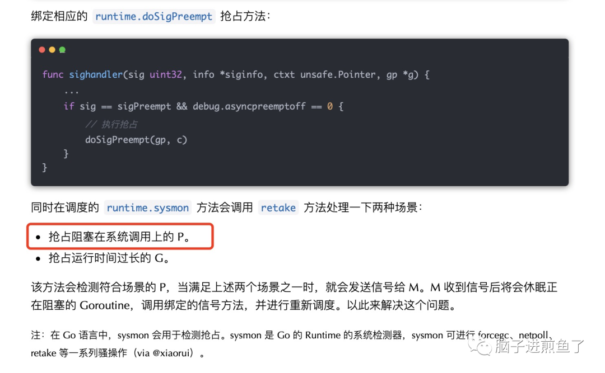

嗯，你觉得 Go 在什么时候会抢占 P？
前几天我们有聊到《单核 CPU，开两个 Goroutine，其中一个死循环，会怎么样？》的问题，我们在一个细节部分有提到：

有新的小伙伴会产生更多的疑问，那就是在 Go 语言中，是如何抢占 P 的呢，这里面是怎么做的？
今天这篇文章我们就来解密抢占 P。
调度器的发展史
在 Go 语言中，Goroutine 早期是没有设计成抢占式的，早期 Goroutine 只有读写、主动让出、锁等操作时才会触发调度切换。
这样有一个严重的问题，就是垃圾回收器进行 STW 时，如果有一个 Goroutine 一直都在阻塞调用，垃圾回收器就会一直等待他，不知道等到什么时候…
这种情况下就需要抢占式调度来解决问题。如果一个 Goroutine 运行时间过久，就需要进行抢占来解决。
这块 Go 语言在 Go1.2 起开始实现抢占式调度器，不断完善直至今日：
- Go0.x：基于单线程的程调度器。
- Go1.0：基于多线程的调度器。
- Go1.1：基于任务窃取的调度器。
- Go1.2 - Go1.13：基于协作的抢占式调度器。
- Go1.14：基于信号的抢占式调度器。
调度器的新提案：非均匀存储器访问调度（Non-uniform memory access，NUMA）， 但由于实现过于复杂，优先级也不够高，因此迟迟未提上日程。
有兴趣的小伙伴可以详见 Dmitry Vyukov, dvyukov 所提出的 NUMA-aware scheduler for Go。
为什么要抢占 P
为什么会要想去抢占 P 呢，说白了就是不抢，就没机会运行，会 hang 死。又或是资源分配不均了，
这在调度器设计中显然是不合理的。
跟这个例子一样：
1 | // Main Goroutine |
这个例子在老版本的 Go 语言中，就会一直阻塞，没法重见天日，是一个需要做抢占的场景。
但可能会有小伙伴问，抢占了，会不会有新问题。因为原本正在使用 P 的 M 就凉凉了（M 会与 P 进行绑定），没了 P 也就没法继续执行了。
这其实没有问题，因为该 Goroutine 已经阻塞在了系统调用上，暂时是不会有后续的执行新诉求。
但万一代码是在运行了好一段时间后又能够运行了（业务上也允许长等待），也就是该 Goroutine 从阻塞状态中恢复了，期望继续运行，没了 P 怎么办？
这时候该 Goroutine 可以和其他 Goroutine 一样，先检查自身所在的 M 是否仍然绑定着 P：
- 若是有 P，则可以调整状态，继续运行。
- 若是没有 P，可以重新抢 P，再占有并绑定 P，为自己所用。
也就是抢占 P，本身就是一个双向行为，你抢了我的 P，我也可以去抢别人的 P 来继续运行。
怎么抢占 P
讲解了为什么要抢占 P 的原因后，我们进一步深挖，“他” 是怎么抢占到具体的 P 的呢？
这就涉及到前文所提到的 runtime.retake 方法了，其处理以下两种场景：
- 抢占阻塞在系统调用上的 P。
- 抢占运行时间过长的 G。
在此主要针对抢占 P 的场景，分析如下：
1 | func retake(now int64) uint32 { |
该方法会先对 allpLock 上锁，这个变量含义如其名，allpLock 可以防止该数组发生变化。
其会保护 allp、idlepMask 和 timerpMask 属性的无 P 读取和大小变化，以及对 allp 的所有写入操作，可以避免影响后续的操作。
场景一
前置处理完毕后，进入主逻辑，会使用万能的 for 循环对所有的 P（allp）进行一个个处理。
1 | t := int64(_p_.syscalltick) |
第一个场景是：会对 syscalltick 进行判定，如果在系统调用（syscall）中存在超过 1 个 sysmon tick 周期（至少 20us）的任务，则会从系统调用中抢占 P，否则跳过。
场景二
如果未满足会继续往下，走到如下逻辑：
1 | func retake(now int64) uint32 { |
第二个场景，聚焦到这一长串的判断中：
runqempty(_p_) == true方法会判断任务队列 P 是否为空，以此来检测有没有其他任务需要执行。atomic.Load(&sched.nmspinning)+atomic.Load(&sched.npidle) > 0会判断是否存在空闲 P 和正在进行调度窃取 G 的 P。pd.syscallwhen+10*1000*1000 > now会判断系统调用时间是否超过了 10ms。
这里奇怪的是 runqempty 方法明明已经判断了没有其他任务，这就代表了没有任务需要执行，是不需要抢夺 P 的。
但实际情况是，由于可能会阻止 sysmon 线程的深度睡眠，最终还是希望继续占有 P。
在完成上述判断后，进入到抢夺 P 的阶段：
1 | func retake(now int64) uint32 { |
- 解锁相关属性：需要调用
unlock方法解锁allpLock，从而实现获取sched.lock，以便继续下一步。 - 减少闲置 M：需要在原子操作（CAS）之前减少闲置 M 的数量（假设有一个正在运行）。否则在发生抢夺 M 时可能会退出系统调用，递增 nmidle 并报告死锁事件。
- 修改 P 状态：调用
atomic.Cas方法将所抢夺的 P 状态设为 idle，以便于交于其他 M 使用。 - 抢夺 P 和调控 M：调用
handoffp方法从系统调用或锁定的 M 中抢夺 P，会由新的 M 接管这个 P。
总结
至此完成了抢占 P 的基本流程，我们可得出满足以下条件：
- 如果存在系统调用超时：存在超过 1 个 sysmon tick 周期（至少 20us）的任务，则会从系统调用中抢占 P。
- 如果没有空闲的 P：所有的 P 都已经与 M 绑定。需要抢占当前正处于系统调用之，而实际上系统调用并不需要的这个 P 的情况，会将其分配给其它 M 去调度其它 G。
- 如果 P 的运行队列里面有等待运行的 G，为了保证 P 的本地队列中的 G 得到及时调度。而自己本身的 P 又忙于系统调用，无暇管理。此时会寻找另外一个 M 来接管 P，从而实现继续调度 G 的目的。
参考
- NUMA-aware scheduler for Go
- go-under-the-hood
- 深入解析 Go-抢占式调度
- Go语言调度器源代码情景分析